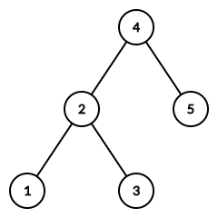

为了迎接新年，Farmer John 决定给他的奶牛们一个节日二叉搜索树！
为了生成这个二叉搜索树，Farmer John 从一个 $1 \cdots N$ 的排列 $a = \left\{ 1, 2, \cdots, N \right\}$ 开始，然后以参数 $1$ 和 $N$ 开始运行如下的伪代码：
def generate(l, r)
if l > r
return empty tree
x ← argminl ≤ i ≤ r ai
return a BST with x as the root,
generate(l, x - 1) as the left subtree,
generate(x + 1, r) as the right subtree
例如，排列 $\left[ 3, 2, 5, 1, 4 \right]$ 将产生如下的二叉搜索树：
令 $d_i \left( a \right)$ 表示节点 $i$ 在用排列 $a$ 生成的二叉搜索树中的深度 (深度定义为这个节点到根节点的路径上的点数)。在上述例子中，$d_4 \left( a \right) = 1, d_2 \left( a \right) = d_5 \left( a \right) = 2, d_1 \left( a \right) = d_3 \left( a \right) = 3$。
定义 $a$ 的逆序数为满足 $1 \leq i < j \leq N$ 且 $a_i > a_j$ 的数对 $\left( i, j \right)$ 的个数。奶牛们知道 Farmer John 用来生成二叉搜索树的排列 $a$ 的逆序数为 $K$。
你需要对于所有满足条件的 $a$，请计算对于每个 $1 \leq i \leq N$，$\sum\limits_a d_i \left( a \right)$ 对 $M$ 取模后的结果。
共一行，包含三个非负整数 $N, K, M$ ($0 \leq N \leq 300; 0 \leq K \leq \dbinom N2; 10^8 \leq M \leq 10^9 + 9$，且 $M$ 是素数)，分别表示排列的大小及逆序数，以及模数。
输出一行，包含 $N$ 个整数，第 $i$ 个整数表示 $\displaystyle \left( \sum_a d_i \left( a \right) \right) \bmod M$ 的值。
考虑如何刻画 "深度" 这一个量。不难发现，顶点 $x$ 的深度等于 $1 \sim N$ 中是 $x$ 祖先的顶点个数 (包含自己)。
显然 $x$ 是 $x$ 的祖先。这种情况比较特殊，我们先将它单独处理，最后对每种排列的答案加上 $1$ 即可，接下来考虑对于其它节点 $y \neq x$，有多少个 $y$ 满足 $y$ 是 $x$ 的祖先。
事实上，若 $y$ 是 $x$ 的祖先，那么由 Cartesian 树的定义 (即上面的构造过程) 立得 $a_y = \min \left\{ a_x, a_{x+1}, \cdots, a_{y-1}, a_y \right\}$ (如果 $x < y$) 或 $a_y = \min \left\{ a_y, a_{y+1}, \cdots, a_{x-1}, a_x \right\}$ (如果 $x > y$)，总之，$a_y$ 是 $x \sim y$ 这一段区间的最小值。
而若 $y$ 不是 $x$ 的祖先，那么设 $w = \operatorname{LCA} \left( x, y \right)$，则有 $a_w < a_y$，从而 $a_y$ 不是 $x \sim y$ 这一段区间的最小值。
于是，有 $y$ 是 $x$ 的祖先，当且仅当 $a_y$ 是 $x \sim y$ 这一段区间的最小值。
由期望的线性性求和的交换律，我们可以转而统计为对于每个 $y$，有多少个逆序数为 $K$ 的 $N$ 元排列满足 $a_y$ 是这一段区间的最小值。
那我们先考虑一个最基础的问题 —— 有多少个逆序数为 $K$ 的 $N$ 元排列？
这是一个非常经典的问题，可以参考 [loj6077]逆序对，可以通过生成函数的方法得到，逆序数为 $K$ 的 $N$ 元排列数等于 $$ F \left( t \right) = \left( 1 + t \right) \left( 1 + t + t^2 \right) \cdots \left( 1 + t + t^2 + \cdots + t^{N - 2} + t^{N - 1} \right) $$ 的 $t^K$ 项系数。
那接下来考察固定 $x, y$ 后，有多少个这样的排列满足 $a_y = \min \left\{ a_x, a_{x+1}, \cdots, a_{y-1}, a_y \right\}$。由对称性，不妨假设 $x < y$。
考虑上面这个生成函数的实际意义，(在那篇题解中已经提到) 乘积式中的第 $i$ 项就表示考虑排列中插入的第 $i + 1$ 个元素产生的逆序对的贡献。
而这个插入的顺序实际上是任意的 —— 只要保证每时每刻都是连续的一段即可，就像双端队列一样，可以自由选择在头还是在尾插入。
于是，我们可以规定一下插入的顺序：首先插入 $x, x + 1, \cdots, y - 1$，然后插入 $y$，最后以任意顺序插入剩下的元素。
那么，考虑插入 $y$ 之前的排列，它显然是任意的，而在插入 $y$ 时，由于我们强制规定 $a_y = \min \left\{ a_x, a_{x+1}, \cdots, a_{y-1}, a_y \right\}$，因此它一定会产生 $y - x$ 个逆序对 —— 即固定这一项为 $t^{y - x}$，而对于后面的项，它的插入对区间 $\left[ x, y \right]$ 不再产生影响，因而也没有限制。
于是，满足 $a_y = \min \left\{ a_x, a_{x+1}, \cdots, a_{y-1}, a_y \right\}$ 且逆序数为 $K$ 的排列数就等于下列生成函数的 $t^K$ 项系数：
$$ \hat F_{x, y} \left( t \right) = \left( 1 + t \right) \left( 1 + t + t^2 \right) \cdots \left( 1 + t + t^2 + \cdots + t^{y - x - 1} \right) \cdot t^{y - x} \cdot \left( 1 + t + t^2 + \cdots + t^{y - x + 1} \right) \cdots \left( 1 + t + t^2 + \cdots + t^{N - 2} + t^{N - 1} \right) = \frac {t^{y - x}} {1 + t + t^2 + \cdots + t^{y - x}} \cdot F \left( t \right) $$
同理，当 $x > y$ 时，满足 $a_y = \min \left\{ a_y, a_{y+1}, \cdots, a_{x-1}, a_x \right\}$ 且逆序数为 $K$ 的排列数就等于下列生成函数的 $t^K$ 项系数：
$$ \check F_{y, x} \left( t \right) = \left( 1 + t \right) \left( 1 + t + t^2 \right) \cdots \left( 1 + t + t^2 + \cdots + t^{x - y - 1} \right) \cdot 1 \cdot \left( 1 + t + t^2 + \cdots + t^{x - y + 1} \right) \cdots \left( 1 + t + t^2 + \cdots + t^{N - 2} + t^{N - 1} \right) = \frac 1 {1 + t + t^2 + \cdots + t^{x - y}} \cdot F \left( t \right) $$
现在只需考虑计算出这些系数即可。首先，展开 $F \left( t \right)$ 的时间复杂度为 $O \left( N^3 \right)$ (通过前缀和优化，或者将 $1 + t + t^2 + \cdots + t^{k-1}$ 看成 $\dfrac {1 - t^k} {1 - t}$)，然后如果暴力枚举 $x, y$，总复杂度就变成了 $O \left( N^5 \right)$，无法通过。
稍加观察，可以发现多项式 $\hat F_{x, y} \left( t \right)$ 和 $\check F_{y, x} \left( t \right)$ 只和 $\left| y - x \right|$ 有关，而和 $x, y$ 的绝对大小无关。而 $\left| y - x \right|$ 只可以取到 $1, 2, \cdots, N - 1$ 这 $N - 1$ 个不同的值，因此只需要展开 $N - 1$ 遍分别贡献即可，时间复杂度 $O \left( N^4 \right)$。
还能怎么优化呢？注意到这个式子的形式，有点像 Lagrange 插值时的形式：$n$ 个多项式的乘积然后除掉其中一项。
因此，我们可以预先计算出 $F \left( t \right)$，然后对它做一次多项式除法 (注意到除以 $1 + t + t^2 + \cdots + t^{k-1}$ 就相当于乘上 $\dfrac {1 - t} {1 - t^k}$，分子上的 $1$ 或 $t^{y - x}$ 相当于一个平移，可以 $O \left( N^2 \right)$ 实现或懒实现 (即直接取 $K - \left( y - x \right)$ 项系数)。而每次除法的时间是 $O \left( N^2 \right)$ 的，因此总时间复杂度就降到 $O \left( N^3 \right)$，可以通过此题。
#include <bits/stdc++.h>
typedef unsigned int u32;
const int N = 324, M = 44854;
int mod;
int n, D, I;
int f[M], ans[N];
inline int & add(int &x, const int y) {return x += y - mod, x += x >> 31 & mod;}
inline int & sub(int &x, const int y) {return x -= y, x += x >> 31 & mod;}
void mul(int d) {
int i;
for (i = D; i >= 0; --i) sub(f[i + d], f[i]);
for (i = 1; i <= D + d; ++i) add(f[i], f[i - 1]);
D += d - 1;
}
void div(int d) {
int i;
for (i = D; i; --i) sub(f[i], f[i - 1]);
D -= d - 1;
for (i = 0; i <= D; ++i) add(f[i + d], f[i]);
}
int main() {
int i, j, d;
scanf("%d%d%d", &n, &I, &mod), *f = 1;
for (i = 2; i <= n; ++i) mul(i);
std::fill(ans + 1, ans + (n + 1), f[I]);
for (d = 1; d < n; ++d) {
div(d + 1);
if (I >= d) for (i = 1; i <= n - d; ++i) add(ans[i], f[I - d]);
for (i = 1 + d; i <= n; ++i) add(ans[i], f[I]);
mul(d + 1);
}
for (i = 1; i <= n; ++i) printf("%d%c", ans[i], i == n ? 10 : 32);
return 0;
}
坑1：如果像上面代码一样使用懒平移 (直接取 $K - \left( y - x \right)$ 项系数) 的话，记得判断是否有 $K \geq y - x$，以免数组越界。
坑2：在 (暴力) 多项式乘法和除法的过程中，注意多项式的次数，不要漏项了。